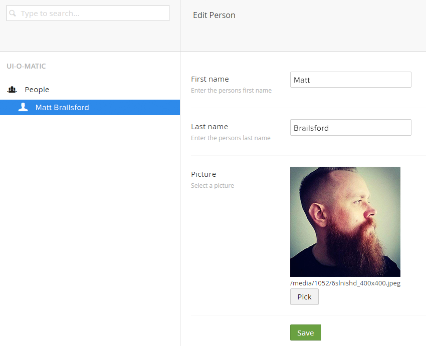

By Matt Brailsford / @mattbrailsford
...a dynamic editor interface for your custom pocos
(Created by Tim Geyssens)
it can take this...
[UIOMatic("people", "People", "Person", FolderIcon = "icon-users", ItemIcon = "icon-user")]
[TableName("people")]
public class Person {
[PrimaryKeyColumn(AutoIncrement = true)]
public int Id { get; set; }
[UIOMaticField(Name = "First name", Description = "Enter the persons first name")]
public string FirstName { get; set; }
[UIOMaticField(Name = "Last name", Description = "Enter the persons last name")]
public string LastName { get; set; }
[UIOMaticField(Name = "Picture", Description = "Select a picture", View = "file")]
public string Picture { get; set; }
public override string ToString()
{
return FirstName + " " + LastName;
}
}
...turn it into this
...A LOT
[UIOMatic("markers", "Markers", "Marker",
FolderIcon = "icon-pin-location", ItemIcon = "icon-pin-location")]
[TableName("markers")]
public class Marker {
...
[UIOMaticField(Name = "Location", Description = "Enter a location for this marker",
View ="map",
Config = "{ apiKey:\"GMAPS_API_KEY\", center: { lat:55.37805, lng:-3.4359, zoom:5 } }")]
public string Location { get; set; }
...
}
[UIOMaticFolder("mapping", "Mapping", FolderIcon = "icon-pin-location")]
public class MappingFolder
{ }
[UIOMatic("markers", "Markers", "Marker",
FolderIcon = "icon-pin-location", ItemIcon = "icon-pin-location",
ParentAlias = "mapping")]
[TableName("markers")]
public class Marker {
...
}
[UIOMatic("routes", "Routes", "Route",
FolderIcon = "icon-directions", ItemIcon = "icon-directions")]
[TableName("routes")]
public class Route {
...
[UIOMaticListViewField]
[UIOMaticListViewFilter]
public string Region { get; set; }
...
}
[UIOMatic("people", "People", "Person",
FolderIcon = "icon-users", ItemIcon = "icon-user")]
[TableName("people")]
public class Person {
...
[UIOMaticField(Name = "Picture", Description = "Select a picture", View = "file")]
[UIOMaticListViewField(Name = "Picture", View = "image")]
public string Picture { get; set; }
...
}
[UIOMaticAction("import", "Import", "~/path/to/import.dialog.html")]
public class ImportAction { }
[UIOMatic("routes", "Routes", "Route",
FolderIcon = "icon-directions", ItemIcon = "icon-directions",
ListViewActions = new[]{ typeof(ImportAction) })]
[TableName("routes")]
public class Route {
...
}
[UIOMatic("towns", "Towns", "Town",
FolderIcon = "icon-library", ItemIcon = "icon-library",
ShowOnSummaryDashboard = true)]
[TableName("towns")]
public class Town {
...
}
[UIOMatic("people", "People", "Person",
FolderIcon = "icon-users", ItemIcon = "icon-user",
ShowOnSummaryDashboard = true)]
[TableName("people")]
public class Person {
...
}
public interface IUIOMaticRepository
{
IEnumerable<object> GetAll(string sortColumn = "", string sortOrder = "");
UIOMaticPagedResult GetPaged(int pageNumber, int itemsPerPage,
string searchTerm = "",
IDictionary<string, string> filters = null,
string sortColumn = "", string sortOrder = "");
object Get(string id);
object Create(object entity);
object Update(object entity);
void Delete(string[] id);
long GetTotalRecordCount();
}
public abstract class AbstractUIOMaticRepository<TEntity, TId> : IUIOMaticRepository
{
public abstract IEnumerable<TEntity> GetAll(string sortColumn = "", string sortOrder = "");
public abstract UIOMaticPagedResult<TEntity> GetPaged(int pageNumber, int itemsPerPage,
string searchTerm = "",
IDictionary<string, string> filters = null,
string sortColumn = "", string sortOrder = "");
public abstract TEntity Get(TId id);
public abstract TEntity Create(TEntity entity);
public abstract TEntity Update(TEntity entity);
public abstract void Delete(TId[] ids);
long GetTotalRecordCount();
}
[UIOMatic("routes", "Routes", "Route",
FolderIcon = "icon-directions", ItemIcon = "icon-directions",
RepositoryType = typeof(MyRepository))]
[TableName("routes")]
public class Route {
...
}
By Matt Brailsford / @mattbrailsford